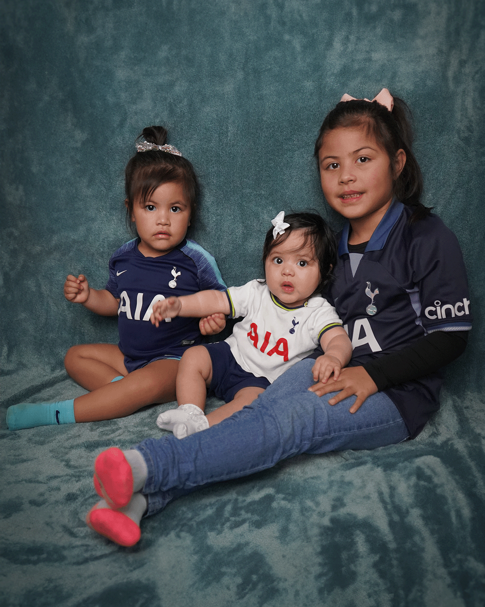
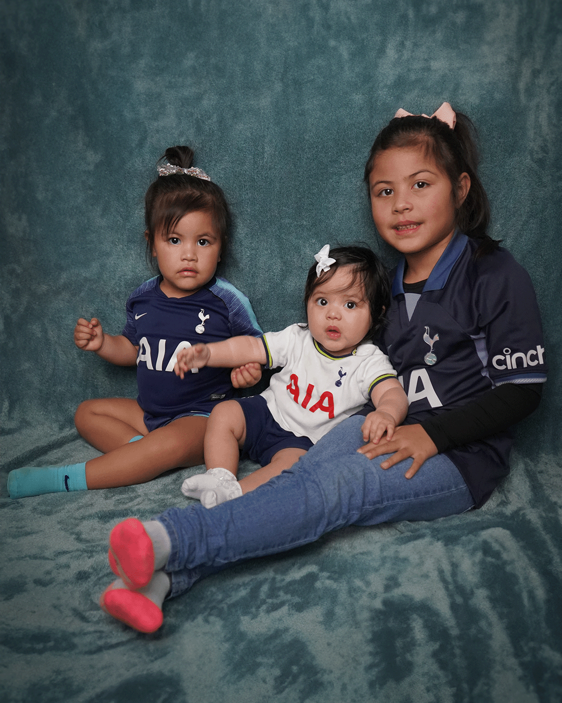

About Me
I'm Boyd Querubin, a 32-year-old originally from the Philippines. I
recently became a naturalized
citizen of the United States. I'm fluent in both English and Tagalog,
speaking them both as if they
were my native languages.
I'm a husband and a father of three wonderful children. My journey
started with a Communications
degree, and since graduating in 2019, I've been working as a
Marketer/Content Creator.
However, I'm currently in the process of learning Web Design, as I'm
planning to make a career change
in the near future. As part of this transition, I'm actively working on
creating an Online Portfolio
from scratch, which is my current project.
In my free time, I enjoy playing volleyball, learning to code, and spending quality time with my wife and kids.
 
